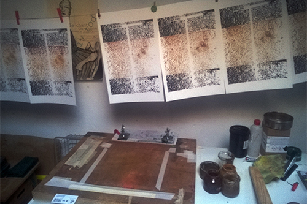
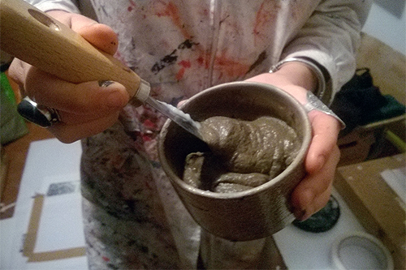
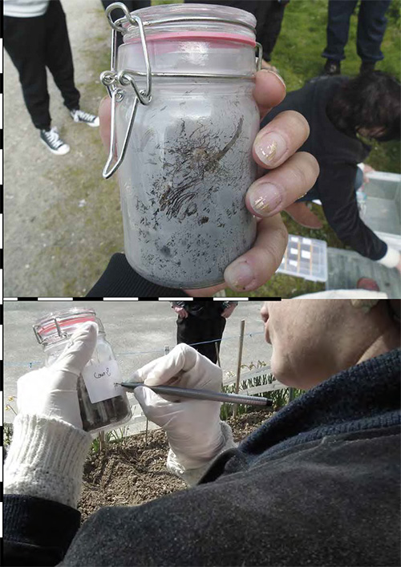
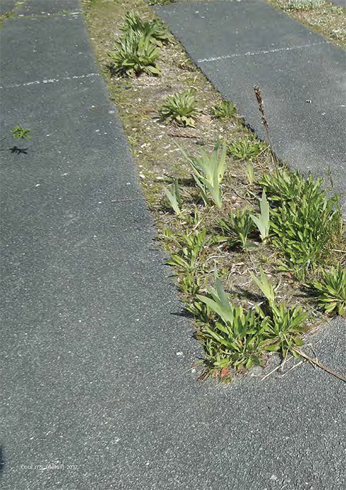
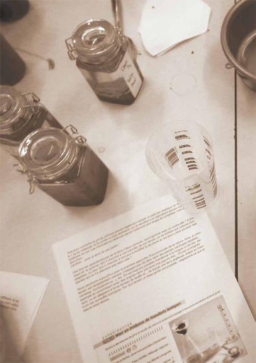
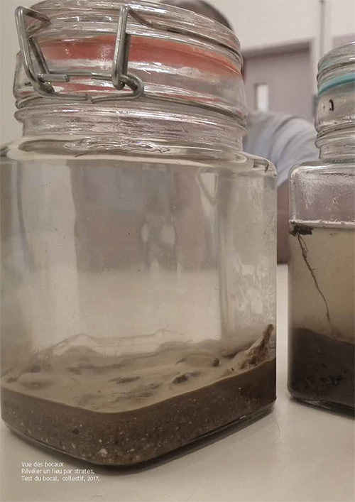
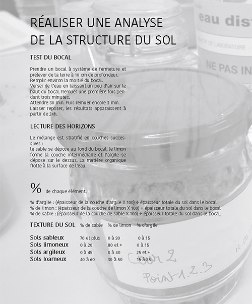
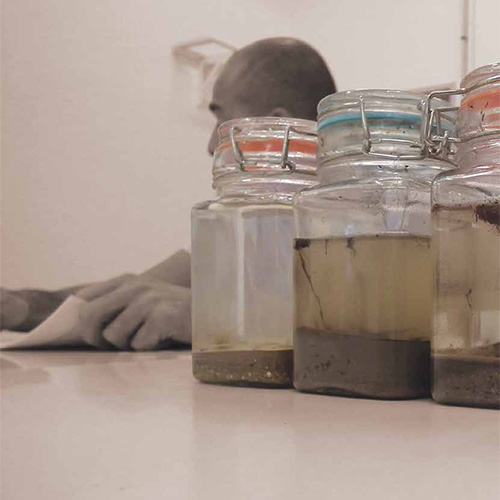

Analyse de sol, Ateliers de recherches et de créations, Maison Centrale de Poissy, avec Nicolas Bralet, Delphine Chevrot et Sabrina Issa, janvier 2017.
} SOL {
Le sol est le relief d’un paysage visible mais qu’en est-il sous nos pieds ? Les végétaux donnent quelques informations sur les propriétés du sol, une première observation en profondeur en révèle d’autres. Par divers gestes artistiques empruntés des sciences (analyses, carottages), nous tenterons de révéler à la surface ce qui se cache en profondeur. Et comment ses données biologiques, géologiques et botaniques peuvent nous amener sur un nouveau territoire de réflexion, de dialogue et d’agissement ?
Ce projet coordonné par le SPIP s'inscrit dans le cadre d'une programmation culturelle autour de la culture scientifique au sein de la Maison Centrale de Poissy. Le but des interventions du LAAB est de faire le lien entre le culturel et le scolaire afin de proposer un ensemble cohérent d'expérimentation et d'expression, à l'ensemble de la population pénale. Ce projet s'est concrétisé avec la licence de Lettres proposée par l'Université Paris VII dispensé par Julie Ramage dans le cadre du programme Académie Vivante, de Bétonsalon. L’idée pour nous a été de proposer à l’année et à l’ensemble des personnes détenues, la concrétisation d’une recherche sous la forme d’une exposition et d’une édition collective.
Dans ce sens, une première contribution a pu être réalisé sous la forme d’une édition collective où schémas, photos, récits reviennent sur le contenu des gestes effectués, tout en donnant à chacun les moyens d’une réappropriation plus formelle.
Afin d’approfondir cette dimension artistique à partir du gestes scientifiques, nous avons également fait le choix d’une exposition de sérigraphies. Nous avons travaillé sur une douzaine de tirages, dont les couleurs ont été réalisés avec de la terre prélevée dans les différents espaces extérieurs de la maison Centrale.
Ce dernier choix affirme pleinement la dimension finale artistique et expérimentale du projet.

} SOL {, 12 tirages numérotés de sérigraphies réalisées avec à partir de prélèvements éffectués dans les sols de la Maison Centrale de Poissy. Atelier Anouchka Wood, LAAB, déc. 2017.

vue d'atelier, } SOL {, 12 tirages numérotés de sérigraphies réalisées avec à partir de prélèvements éffectués dans les sols de la Maison Centrale de Poissy. Atelier Anouchka Wood, LAAB, déc. 2017.

Vue de la page 5, } SOL {, de l'édition éponyme réalisée à partir des interventions effectuées à la Maison Centrale de Poissy. LAAB, 2017.

Vue de la page 6, } SOL {, de l'édition éponyme réalisée à partir des interventions effectuées à la Maison Centrale de Poissy. LAAB, 2017.

Vue de la page 20, } SOL {, de l'édition éponyme réalisée à partir des interventions effectuées à la Maison Centrale de Poissy. LAAB, 2017.

Vue de la page 24, test du bocal } SOL {, de l'édition éponyme réalisée à partir des interventions effectuées à la Maison Centrale de Poissy. LAAB, 2017.

Vue de la page 26, recette annalyse de la structure du sol avec lecture des horizon, } SOL {, de l'édition éponyme réalisée à partir des interventions effectuées à la Maison Centrale de Poissy. LAAB, 2017.

Vue de la page 30, } SOL {, de l'édition éponyme réalisée à partir des interventions effectuées à la Maison Centrale de Poissy. LAAB, 2017.